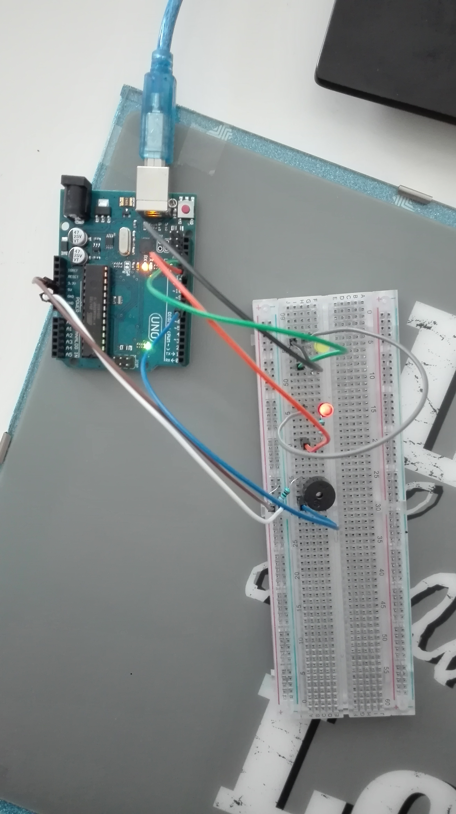
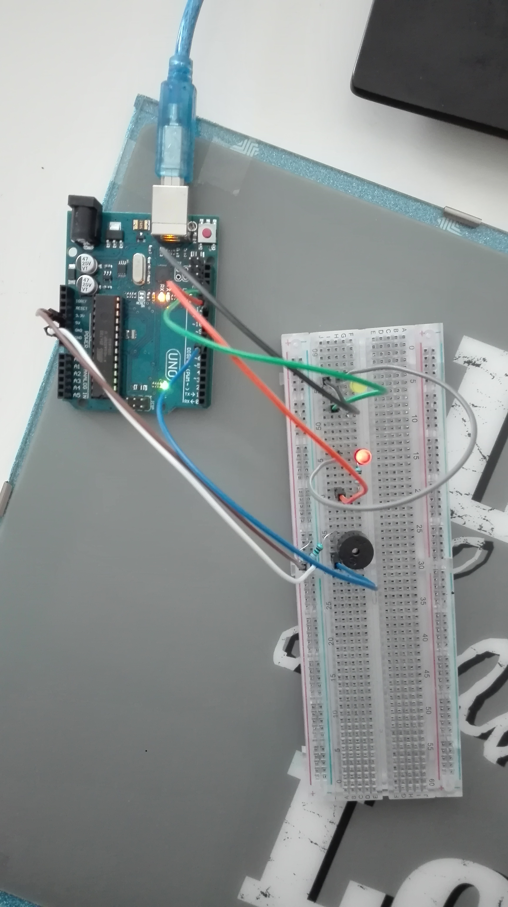

Workshop
Hieronder staan de gemaakte opdrachten met bijbehorende video's, foto's en screenshot van code van de workshop.
Opdracht 2F , 2I en 2O
Hieronder staan de codes en het resultaat van opdracht 2F, 2I en 2O.
2F:


2I:

Zoals je kan zien heb ik bij opdracht 2I zes figuren geplaatst: een lijn, een cirkel, een driehoek en twee verschillende vormen van een quad. Ook heb ik alle figuren een andere kleur gegeven.


Opdracht 3A, 3B, 3D en 3E
Hieronder staan de codes en het resultaat van de opdracht 3.
3A:


3B:
Ik heb er voor gekozen om een extra rode neus op mijn gezicht neer te zetten.


3D:
Eerst heb ik een afbeelding van internet gehaald, en door de positie aan te passen staat deze nu boven op mijn hoofd.


3E:
Bij de eerste opdracht van 3E kwam er eerst een rondje op het lichtste punt van het beeld te staan. Dit heb ik verandert door een driehoek te maken die altijd vast boven in de hoek staat en de andere kant naar het lichste punt gaat. Bekijk het filmpje.


Bij de andere opdracht van 3E heb ik er voor gezorgd dat er geen vierhoeken in beeld komen, maar lijnen de een random breedte hebben. Bekijk het filmpje.
Opdracht 4B
Ik heb er voor gekozen om de code uit te breiden met een extra ledje en een speaker. Wanneer het vierkant je Processing rood is, brand het rode ledje en speelt en een geluidje af. Als je dan met je muis in het vierkant gaat, wordt deze geel en gaat het gele ledje branden met een ander geluidje. Bekijk het filmpje. (Zorg dat je geluid hard genoeg staat).

 
